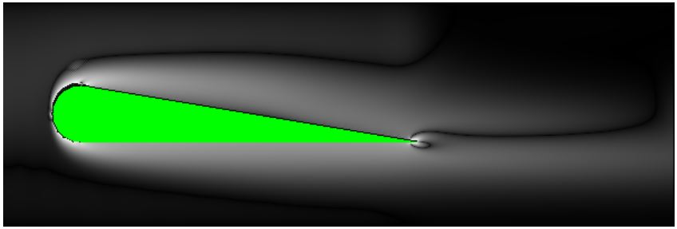
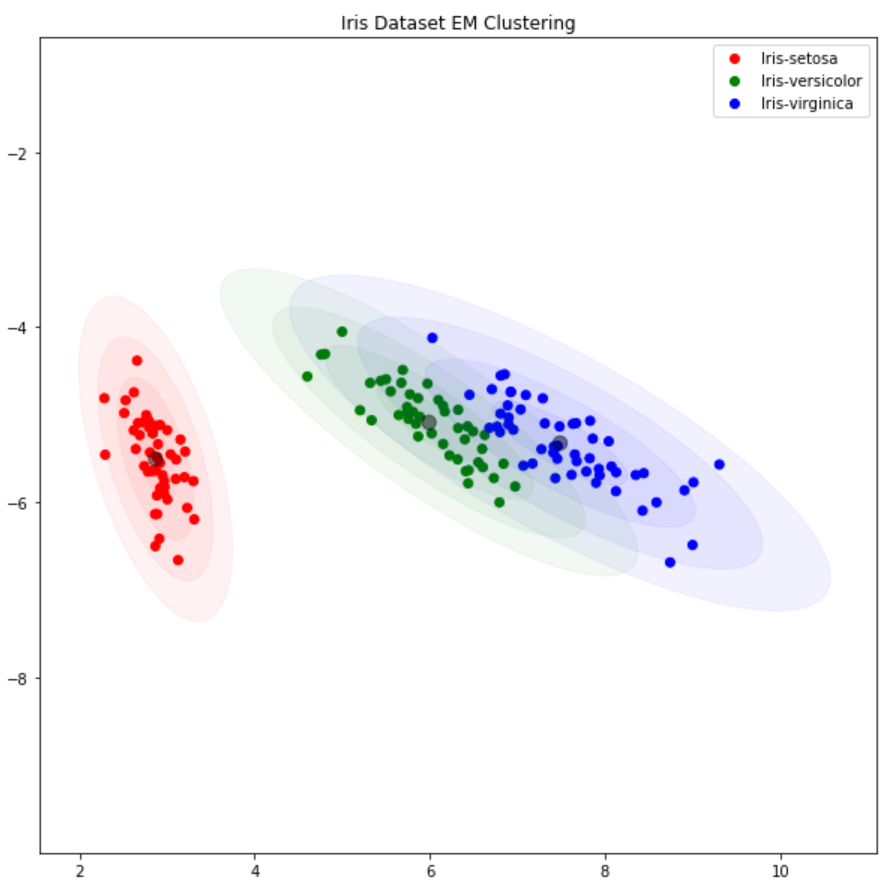

Multi-Agent Car Parking (Thesis)
Undergraduate thesis applying reinforcement learning to simulate and control groups of autonomous vehicles using PPO and Unity ML-Agents.
Python  C#
C#  Unity
Unity  Slurm
Slurm 
MiniC Compiler
Compiler Design coursework implementing a compiler frontend for a simple C-like language using modern C++17 and LLVM.
C++ 

Implemented low-level optimisation techniques on the C code, making it run in 1/10th of the original time (~80s to ~7s).
Utilised parallelisation by applying multi-threading using OpenMP, and vectorisation using SSE Intrinsics. Made the code parralilsable by removing inter-loop dependencies.
Applied general optimisation techniques such as loop unrolling, loop fusion & fission, precomputing static conditionals, and removing unexecuted code.
Physics Simulation Optimisation
Advanced Computer Architecture coursework, involving the optimisation of a two-dimensional computational fluid dynamics simulator.
C 

Achieved 98% max cluster assignment accuracy after 19 EM iterations.
Used PCA for dimensionality reduction and data visualisation.
Developed and analysed E-step, M-step, and label assignment for EM clustering.
Gaussian Mixture Model Clustering with EM Algorithm
Machine Learning coursework on implementing clustering on the Iris dataset using Gaussian Mixture Models and the EM algorithm, improving accuracy over K-Means.
Python
Packet Sniffer
Operating Systems coursework, involving the implementation of packet sniffer to detect SYN Flood, ARP Poisoning and URL Blacklist attacks.
C

Timetable Scheduler
Artificial Intelligence coursework involving the implementation of a class timetable scheduler in Python.
Python
TurtleBot Planning, Localisation and Control
Mobile Robotics coursework involving motion planning, control, sensing, and localisation using ROS and Turtlebot3 in the Gazebo simulator.
Python ROS

Pong
C Programming coursework, involving implementing the classic "Pong" game on the screen of an oscilloscope via an ARM controller.
C

Derivative Trade Manager
Software Engineering group project sponsored by Deutsche Bank, involving the design and implementation of a full-stack application to manage derivative trades.
Java  JavaScript
JavaScript  SQL
SQL 

Witter
Java Programming coursework, involving implementing the backend data store for a "Witter" application (akin to Twitter).
Java

Scratch Clone
Haskell Programming coursework, involving implementing an interpreter to compute the resulting memory state, from an input program in Scratch block format and the initial memory state.
PLM Parser and Evaluator
Formal Languages coursework, involving the implementation of a parser and evaluator for a made-up programming language (Programming Language of the Moment).
Java
Propositional Logic Prover
Logic coursework, involving the implementation of a logical evaluator to determine whether an input logical theorem is a tautology.
Prolog